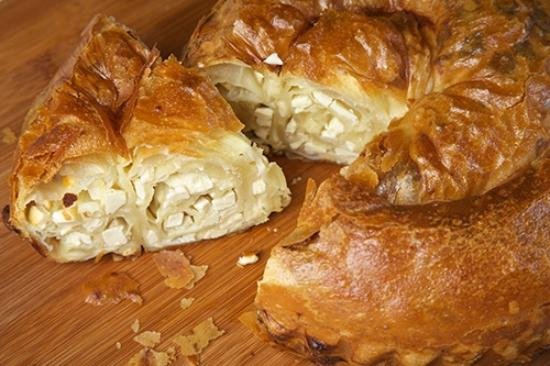

Reciepe of Moldovian Pie

Description
When Nicolina and I got married I wanted to cook her the foods that she grew up with. This Moldovan Cheese Pie is a
savory reminder of her childhood. My mother in law Natasha told me how to make the filling and I watched youtube
videos in Russian to learn how to make it. I don’t understand Russian so there was some guess work involved but
the final result was perfect. If you love cheese and dill you will love this pie. I try not to make it too often
because it’s hard to stop myself from eating the whole thing.
Ingredients
- For the dough:
- 4 cups of flour
- 1¼ cups of water
- 1 tablespoon of salt
- 2 eggs
- ½ cup of vegetable oil plus more when rolling out dough
- For the filling:
- 2 cups chopped fresh dill
- 1 cup crumbled feta
- 1 lb farmer's cheese ( you can substitute queso blanco)
Steps
- Mix all the flour ingredients together and kneed until it forms a cohesive ball. If you need add more flour or
water if dough is too dry or sticky do so 1 tablespoon at a time
- Refrigerate dough for 1½ hours up to 12 hours
- Mix the ingredients for the filling and set aside
- Divide dough into 3 equal parts
- Roll out dough until its almost paper thin and spread oil over it
- Add ⅓ of the filling - see pictures above and roll into a log
- Roll log into spiral
- Repeat with remaining dough
- Brush dough with egg ( optional )
- Bake at 350 for about an hour
- Let cool and serve
Back to main page